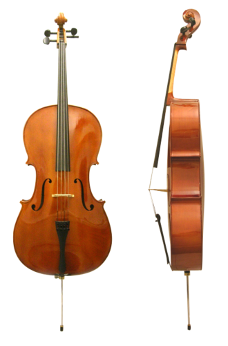
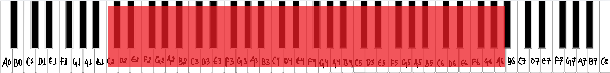
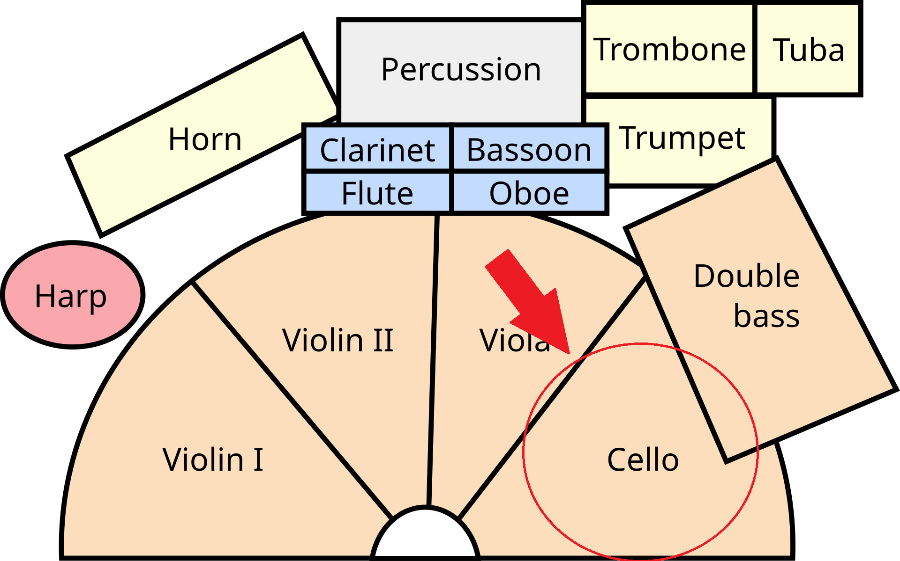
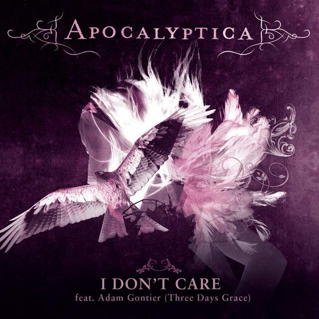
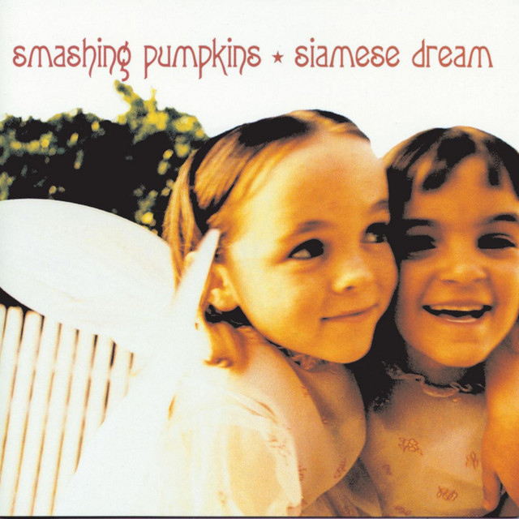
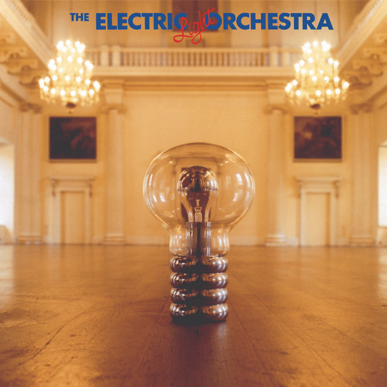

What is a cello?
The cello is bass musical instrument of the violin group, with four strings, pitched C–G–D–A upward from two octaves below middle C. The cello has a large, hollow wooden body with a rounded, waisted shape similar to that of the violin but with proportionally deeper ribs and a shorter neck. Measuring about 27.5 inches (70 cm) in length (47 inches [119 cm] with the neck), it is larger than the viola but smaller than the double bass. [1]


Musical range and clef
The range of the cello is C2 to A6. It is possible to play higher, but you should use careful planning and thought as to how the player is going to get there. For example, you can use scales, arpeggios, or the performer can listen to other instruments in that register, which can be really, really helpful. [2]
Primarily, the cello’s music is written in the bass clef. It’s usually written in music an octave below the music line, so it emits a powerful, double bass. [3]

Where is the cellist seated in an orchestra?
The cello is seated on the right of the conductor, right next to the viola and in front of the double bass. [4]
Popular songs/pieces that feature the instrument:

I Don't Care
Eleanor Rigby

Disarm

10538 Overture
References
- Brittanica, "Cello".
- Matthew Arrellin, "Cello Range".
- music to your home, "What Clef is Cello?".
- Rockford Symphony Orchestra, "Are all orchestras arranged on stage the same way?".